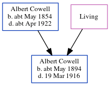

Annie Emily Keeble (née Cowell) 1896 - c1958
[ Home ] | [ Calendar ] | [ Surnames Index ] | [ Errors ] | [ Family History ]The child of Albert Cowell (an agricultural labourer) and Ellen Young, Annie Cowell, the second cousin twice-removed on the mother's side of Nigel Horne, was born in Worth, Kent, England on 16 Feb 18961,2,3 and baptised there at Ss Peter & Paul on 29 Mar 1896. She married William Keeble (an incapacitated) at St Mary the Virgin Church, Nonington, Kent, England on 10 Jan 19235.
During her life, she was living at Adisham Street, Adisham, Kent on 31 Mar 19011; and at 1 The Huts, Snowdown, Kent on 29 Sept 19392.
She died c. May 1958 in Folkestone, Kent, England4.
Parents
- Albert was born c. May 1854
- Ellen
Citations
- 1901 England, Wales & Scotland Census - Findmypast (was age 5 and the daughter of the head of the household)
- 1939 Register - Findmypast (was recorded at this address)
- England & Wales births 1837-2006 - Findmypast
- England & Wales deaths 1837-2007 - Findmypast
- England & Wales Marriages 1837-2005 - Findmypast
Media
1901 England, Wales & Scotland Census - GBC/1901/0005470346
England & Wales births 1837-2006 - BMD/B/1896/1/AZ/000127/043
Kent, Canterbury Archdeaconry Marriages Transcription - GBPRS-CANT-M-97044861-2
1939 Register Transcription - TNA-R39-1821-1821G-002-04
England & Wales deaths 1837-2007 - BMD/D/1958/2/AZ/000572/115
England & Wales marriages 1837-2005 - BMD/M/1923/1/AZ/000170/053
Kent Baptisms - GBPRS/CANT/B/96431485
England Births & Baptisms 1538-1975 - R_885459467
Family Tree
Map
Generated by ged2site. Last updated on Jul 3, 2024